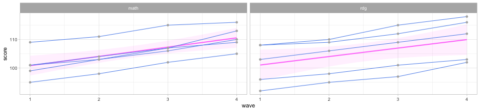
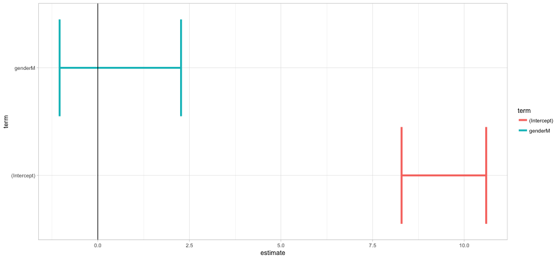

Agenda
- Introduce the concept of tidy data
- Tidy a simple dataset together with
tidyr - Summarize and transform tidy data with
dplyr - Fit a few models and look at some extensions (the
broompackage) - Practice a bit, if time allows (it probably won’t)
A little story first


It is often said that 80% of data analysis is spent on the process of cleaning and preparing the data.
- Persistent and varied challenge
- Little research on how to do it well
- Enter Hadley Wickham

Tidy data
Definition
- Each variable is a column
- Each observation is a row
- Each type of observational unit forms a table

Common ways rectangular datasets are “messy”
(We won’t get into multiple data files and how they interact, i.e., relational databases)
- Column headers are values, not variable names
- Multiple variables stored in one column
- Variables are stored in both rows and columns
Some examples
(from the JSS paper)
| religion | <$10k | $10-20k | $20-30k | $30-40k | $40-50k | $50-75k | $75-100k | $100-150k | >150k | Don’t know/refused |
|---|---|---|---|---|---|---|---|---|---|---|
| Agnostic | 27 | 34 | 60 | 81 | 76 | 137 | 122 | 109 | 84 | 96 |
| Atheist | 12 | 27 | 37 | 52 | 35 | 70 | 73 | 59 | 74 | 76 |
| Buddhist | 27 | 21 | 30 | 34 | 33 | 58 | 62 | 39 | 53 | 54 |
| Catholic | 418 | 617 | 732 | 670 | 638 | 1116 | 949 | 792 | 633 | 1489 |
| Don’t know/refused | 15 | 14 | 15 | 11 | 10 | 35 | 21 | 17 | 18 | 116 |
| Evangelical Prot | 575 | 869 | 1064 | 982 | 881 | 1486 | 949 | 723 | 414 | 1529 |
| Hindu | 1 | 9 | 7 | 9 | 11 | 34 | 47 | 48 | 54 | 37 |
| Historically Black Prot | 228 | 244 | 236 | 238 | 197 | 223 | 131 | 81 | 78 | 339 |
| Jehovah’s Witness | 20 | 27 | 24 | 24 | 21 | 30 | 15 | 11 | 6 | 37 |
| Jewish | 19 | 19 | 25 | 25 | 30 | 95 | 69 | 87 | 151 | 162 |
| Mainline Prot | 289 | 495 | 619 | 655 | 651 | 1107 | 939 | 753 | 634 | 1328 |
| Mormon | 29 | 40 | 48 | 51 | 56 | 112 | 85 | 49 | 42 | 69 |
| Muslim | 6 | 7 | 9 | 10 | 9 | 23 | 16 | 8 | 6 | 22 |
| Orthodox | 13 | 17 | 23 | 32 | 32 | 47 | 38 | 42 | 46 | 73 |
| Other Christian | 9 | 7 | 11 | 13 | 13 | 14 | 18 | 14 | 12 | 18 |
| Other Faiths | 20 | 33 | 40 | 46 | 49 | 63 | 46 | 40 | 41 | 71 |
| Other World Religions | 5 | 2 | 3 | 4 | 2 | 7 | 3 | 4 | 4 | 8 |
| Unaffiliated | 217 | 299 | 374 | 365 | 341 | 528 | 407 | 321 | 258 | 597 |
The tidied version
| religion | income | freq |
|---|---|---|
| Agnostic | <$10k | 27 |
| Agnostic | $10-20k | 34 |
| Agnostic | $20-30k | 60 |
| Agnostic | $30-40k | 81 |
| Agnostic | $40-50k | 76 |
| Agnostic | $50-75k | 137 |
| Agnostic | $75-100k | 122 |
| Agnostic | $100-150k | 109 |
| Agnostic | >150k | 84 |
| Agnostic | Don’t know/refused | 96 |
| Atheist | <$10k | 12 |
| Atheist | $10-20k | 27 |
Yet another example
## Parsed with column specification:
## cols(
## .default = col_integer(),
## iso2 = col_character()
## )
## See spec(...) for full column specifications.
| country | year | m014 | m1524 | m2534 | m3544 | m4554 | mu | f014 | f1524 | f2534 | f3544 | f4554 |
|---|---|---|---|---|---|---|---|---|---|---|---|---|
| AD | 2000 | 0 | 0 | 1 | 0 | 0 | ||||||
| AE | 2000 | 2 | 4 | 4 | 6 | 5 | 3 | 16 | 1 | 3 | 0 | |
| AF | 2000 | 52 | 228 | 183 | 149 | 129 | 93 | 414 | 565 | 339 | 205 | |
| AG | 2000 | 0 | 0 | 0 | 0 | 0 | 1 | 1 | 1 | 0 | 0 | |
| AL | 2000 | 2 | 19 | 21 | 14 | 24 | 3 | 11 | 10 | 8 | 8 | |
| AM | 2000 | 2 | 152 | 130 | 131 | 63 | 1 | 24 | 27 | 24 | 8 | |
| AN | 2000 | 0 | 0 | 1 | 2 | 0 | 0 | 0 | 1 | 0 | 0 | |
| AO | 2000 | 186 | 999 | 1003 | 912 | 482 | 247 | 1142 | 1091 | 844 | 417 | |
| AR | 2000 | 97 | 278 | 594 | 402 | 419 | 121 | 544 | 479 | 262 | 230 | |
| AS | 2000 | 1 | 1 |
In this example, M indicates if the data came from a male, while F indicates female. The subsequent numbers represent the age range. Tidying these data will be a two step process.
Step one
| country | year | variable | cases |
|---|---|---|---|
| AD | 2000 | m014 | 0 |
| AE | 2000 | m014 | 2 |
| AF | 2000 | m014 | 52 |
| AG | 2000 | m014 | 0 |
| AL | 2000 | m014 | 2 |
| AM | 2000 | m014 | 2 |
| AN | 2000 | m014 | 0 |
| AO | 2000 | m014 | 186 |
| AR | 2000 | m014 | 97 |
| AS | 2000 | m014 | NA |
Notice this is much closer to what we want, but we have a problem now in that we have two variables stored in one column.
Step two: Tidied data
| country | year | sex | age_range | cases |
|---|---|---|---|---|
| AD | 2000 | m | 0-14 | 0 |
| AD | 2000 | m | 15-24 | 0 |
| AD | 2000 | m | 25-34 | 1 |
| AD | 2000 | m | 35-44 | 0 |
| AD | 2000 | m | 45-54 | 0 |
| AD | 2000 | m | 55-64 | 0 |
| AD | 2000 | m | 65+ | 0 |
| AE | 2000 | m | 0-14 | 2 |
| AE | 2000 | m | 15-24 | 4 |
| AE | 2000 | m | 25-34 | 4 |
Variables as rows and columns
| id | year | month | element | d1 | d2 | d3 | d4 | d5 | d6 | d7 | d8 |
|---|---|---|---|---|---|---|---|---|---|---|---|
| MX17004 | 2010 | 1 | tmax | ||||||||
| MX17004 | 2010 | 1 | tmin | ||||||||
| MX17004 | 2010 | 2 | tmax | 27.3 | 24.1 | ||||||
| MX17004 | 2010 | 2 | tmin | 14.4 | 14.4 | ||||||
| MX17004 | 2010 | 3 | tmax | 32.1 | |||||||
| MX17004 | 2010 | 3 | tmin | 14.2 | |||||||
| MX17004 | 2010 | 4 | tmax | ||||||||
| MX17004 | 2010 | 4 | tmin | ||||||||
| MX17004 | 2010 | 5 | tmax | ||||||||
| MX17004 | 2010 | 5 | tmin |
Two Steps
Step 1
| id | year | month | element | day_key | value |
|---|---|---|---|---|---|
| MX17004 | 2010 | 12 | tmax | d1 | 29.9 |
| MX17004 | 2010 | 12 | tmin | d1 | 13.8 |
| MX17004 | 2010 | 2 | tmax | d2 | 27.3 |
| MX17004 | 2010 | 2 | tmin | d2 | 14.4 |
| MX17004 | 2010 | 11 | tmax | d2 | 31.3 |
| MX17004 | 2010 | 11 | tmin | d2 | 16.3 |
| MX17004 | 2010 | 2 | tmax | d3 | 24.1 |
| MX17004 | 2010 | 2 | tmin | d3 | 14.4 |
| MX17004 | 2010 | 7 | tmax | d3 | 28.6 |
| MX17004 | 2010 | 7 | tmin | d3 | 17.5 |
Step 2
| id | date | tmax | tmin |
|---|---|---|---|
| MX17004 | 2010-01-01 | 27.8 | 14.5 |
| MX17004 | 2010-02-02 | 29.7 | 13.4 |
| MX17004 | 2010-02-02 | 27.3 | 14.4 |
| MX17004 | 2010-02-02 | 29.9 | 10.7 |
| MX17004 | 2010-02-02 | 24.1 | 14.4 |
| MX17004 | 2010-03-03 | 34.5 | 16.8 |
| MX17004 | 2010-03-03 | 31.1 | 17.6 |
| MX17004 | 2010-03-03 | 32.1 | 14.2 |
| MX17004 | 2010-04-04 | 36.3 | 16.7 |
| MX17004 | 2010-05-05 | 33.2 | 18.2 |
The data that vexed me
Are the below tidy?
library(mdsr)
knitr::kable(head(Minneapolis2013))
| Precinct | First | Second | Third | Ward |
|---|---|---|---|---|
| P-10 | BETSY HODGES | undervote | undervote | W-7 |
| P-06 | BOB FINE | MARK ANDREW | undervote | W-10 |
| P-09 | KURTIS W. HANNA | BOB FINE | MIKE GOULD | W-10 |
| P-05 | BETSY HODGES | DON SAMUELS | undervote | W-13 |
| P-01 | DON SAMUELS | undervote | undervote | W-5 |
| P-04 | undervote | undervote | undervote | W-6 |
I would have expected the data to look like this: * Are both forms tidy? What’s the difference?
| Precinct | Ward | ballot | choice | candidate |
|---|---|---|---|---|
| P-10 | W-7 | 1 | First | BETSY HODGES |
| P-10 | W-7 | 1 | Second | undervote |
| P-10 | W-7 | 1 | Third | undervote |
| P-06 | W-10 | 2 | First | BOB FINE |
| P-06 | W-10 | 2 | Second | MARK ANDREW |
| P-06 | W-10 | 2 | Third | undervote |
Defining tidy data
Two rules essentially define tidy data
(from mdsr)
- Each row is a case representing the same underlying attribute.
- Each column is a variable containing the same type of value for each case.
The combination of rows and columns make each case (row) unique, even though cells may be repeated many times (e.g., student identifier).
A caveat
There are many reasons why you might want to have messy data. However, tidy data is an extremely useful format generally, and particularly useful when applying tools within the tidyverse.
All packages within the tidyverse are designed to either help you get your data in a tidy format, or assume your data are already in a tidy format.
Assuming a common data format leads to large jumps in efficiency, as the output from certain functions can be directly input into others.
The tidyverse data analysis philosophy

Load the data
library(tidyverse)
library(rio)
d <- import("./data/exam1.csv")
knitr::kable(head(d))
| stu_name | gender | item_1 | item_2 | item_3 | item_4 | item_5 | item_6 | item_7 | item_8 | item_9 | item_10 | item_11 | item_12 | item_13 | item_14 | item_15 | item_16 | item_17 | item_18 |
|---|---|---|---|---|---|---|---|---|---|---|---|---|---|---|---|---|---|---|---|
| Adam | M | 1 | 1 | 1 | 1 | 1 | 1 | 1 | 0 | 0 | 0 | 0 | 0 | 0 | 0 | 0 | 0 | 0 | 0 |
| Anne | F | 1 | 1 | 1 | 1 | 1 | 1 | 1 | 1 | 1 | 1 | 0 | 0 | 0 | 0 | 0 | 0 | 0 | 0 |
| Audrey | F | 1 | 1 | 1 | 1 | 1 | 1 | 1 | 1 | 1 | 1 | 0 | 0 | 1 | 0 | 0 | 0 | 0 | 0 |
| Barbara | F | 1 | 1 | 1 | 1 | 0 | 0 | 1 | 0 | 0 | 1 | 0 | 0 | 0 | 0 | 0 | 0 | 0 | 0 |
| Bert | M | 1 | 1 | 1 | 1 | 1 | 0 | 1 | 0 | 1 | 1 | 0 | 0 | 0 | 0 | 0 | 0 | 0 | 0 |
| Betty | F | 1 | 1 | 1 | 1 | 1 | 1 | 1 | 1 | 1 | 0 | 0 | 0 | 0 | 0 | 0 | 0 | 0 | 0 |
Pop Quiz Time
Consider the item as the unit of analysis
- Are these data tidy?
- If not, what needs to happen to make them tidy?
- What are the variables? What are the values?
dplyr versus tidyr
dplyr: Helps you manipulate your data (create, remove, summarize, etc. )tidyr: Helps you get your data into a tidy format
Verbs: tidyr
gather()spread()separate()andextract()unite()nest()
What do you think each do?
Step 1: gather the item variables
- Change all item variables into two variables:
itemandscore

Try running the following code
d %>%
gather(key = item, value = score, -1:-2)
- Third argument to
...says we want to omit the first and second columns in when gathering.
What do you get? Are these data tidy now?
- The code on the previous slide basically puts our data in a tidy format.
- To “clean up” some, could transform the
itemvariable to numeric
Finish tidying the data
td <- d %>%
gather(item, score, -1:-2) %>%
mutate(item = parse_number(item))
parse_number()comes from the readr package.
| stu_name | gender | item | score |
|---|---|---|---|
| Adam | M | 1 | 1 |
| Anne | F | 1 | 1 |
| Audrey | F | 1 | 1 |
| Barbara | F | 1 | 1 |
| Bert | M | 1 | 1 |
| Betty | F | 1 | 1 |
An alternative
(please run this code, following the explanation)
td <- d %>%
gather(item, score, -1:-2) %>%
separate(item, c("discard", "item"), sep = "_") %>%
select(-discard)
Why are tidy data useful?
- When used in conjunction with
dplyr, tidy data can result in large gains in efficiency.
For example, suppose we want to calculate the proportion of students responding correctly to each item.
td %>%
group_by(item) %>%
summarize(prop = mean(score))
## # A tibble: 18 x 2
## item prop
## <chr> <dbl>
## 1 1 1.00000000
## 2 10 0.68571429
## 3 11 0.34285714
## 4 12 0.17142857
## 5 13 0.20000000
## 6 14 0.08571429
## 7 15 0.02857143
## 8 16 0.02857143
## 9 17 0.02857143
## 10 18 0.00000000
## 11 2 1.00000000
## 12 3 1.00000000
## 13 4 0.91428571
## 14 5 0.88571429
## 15 6 0.85714286
## 16 7 0.88571429
## 17 8 0.77142857
## 18 9 0.85714286
What if we also wanted to know the standard deviation?
td %>%
group_by(item) %>%
summarize(prop = mean(score),
sd = sd(score))
## # A tibble: 18 x 3
## item prop sd
## <chr> <dbl> <dbl>
## 1 1 1.00000000 0.0000000
## 2 10 0.68571429 0.4710082
## 3 11 0.34285714 0.4815940
## 4 12 0.17142857 0.3823853
## 5 13 0.20000000 0.4058397
## 6 14 0.08571429 0.2840286
## 7 15 0.02857143 0.1690309
## 8 16 0.02857143 0.1690309
## 9 17 0.02857143 0.1690309
## 10 18 0.00000000 0.0000000
## 11 2 1.00000000 0.0000000
## 12 3 1.00000000 0.0000000
## 13 4 0.91428571 0.2840286
## 14 5 0.88571429 0.3228029
## 15 6 0.85714286 0.3550358
## 16 7 0.88571429 0.3228029
## 17 8 0.77142857 0.4260430
## 18 9 0.85714286 0.3550358
What if we wanted to know the proportion correct for each item by gender?
td %>%
group_by(item, gender) %>%
summarize(prop = mean(score))
## # A tibble: 36 x 3
## # Groups: item [?]
## item gender prop
## <chr> <chr> <dbl>
## 1 1 F 1.00000000
## 2 1 M 1.00000000
## 3 10 F 0.72222222
## 4 10 M 0.64705882
## 5 11 F 0.05555556
## 6 11 M 0.64705882
## 7 12 F 0.00000000
## 8 12 M 0.35294118
## 9 13 F 0.22222222
## 10 13 M 0.17647059
## # ... with 26 more rows
We can take the previous example further, by piping the output into a plot
td %>%
group_by(item, gender) %>%
summarize(prop = mean(score)) %>%
mutate(gender = as.factor(gender)) %>%
ggplot(aes(x = item, y = prop, color = gender)) +
geom_point() +
geom_line(aes(group = item))

But, probably better (clearer) to do it in two steps.
First produce the data
pd <- td %>%
group_by(item, gender) %>%
summarize(prop = mean(score)) %>%
mutate(gender = as.factor(gender))
Then produce the plot
ggplot(pd, aes(x = item, y = prop, color = gender)) +
geom_point() +
geom_line(aes(group = item))
Challenge (work by yourself or with a neighbor)
Remember, the following code calculates the mean score for each item.
td %>%
group_by(item) %>%
summarize(prop = mean(score))
- Try to modify the above code to produce raw scores for every student.
- If you’re successful, try to also calculate the percent correct.
Calculate Raw Scores
Modify the prior code to:
group_bystu_name (rather than item)sumscore (rather than average it withmean)
td %>%
group_by(stu_name) %>%
summarize(raw_score = sum(score))
## # A tibble: 35 x 2
## stu_name raw_score
## <chr> <int>
## 1 Adam 7
## 2 Anne 10
## 3 Audrey 11
## 4 Barbara 6
## 5 Bert 8
## 6 Betty 9
## 7 Blaise 13
## 8 Brenda 10
## 9 Britton 8
## 10 Carol 6
## # ... with 25 more rows
Calculate percent correct
td %>%
group_by(stu_name) %>%
summarize(total_poss = max(n()),
raw_score = sum(score),
pct_correct = raw_score / total_poss)
## # A tibble: 35 x 4
## stu_name total_poss raw_score pct_correct
## <chr> <int> <int> <dbl>
## 1 Adam 18 7 0.3888889
## 2 Anne 18 10 0.5555556
## 3 Audrey 18 11 0.6111111
## 4 Barbara 18 6 0.3333333
## 5 Bert 18 8 0.4444444
## 6 Betty 18 9 0.5000000
## 7 Blaise 18 13 0.7222222
## 8 Brenda 18 10 0.5555556
## 9 Britton 18 8 0.4444444
## 10 Carol 18 6 0.3333333
## # ... with 25 more rows
Another common format with longitudinal data
Are these tidy? If not, what’s wrong?
set.seed(100)
ld <- data_frame(sid = 1:5,
wave_1_math = rnorm(5, 100, 10),
wave_2_math = wave_1_math + rnorm(5, 3, 1.5),
wave_3_math = wave_2_math + rnorm(5, 3, 1.5),
wave_4_math = wave_3_math + rnorm(5, 3, 1.5),
wave_1_rdg = rnorm(5, 100, 10),
wave_2_rdg = wave_1_rdg + rnorm(5, 3, 1.5),
wave_3_rdg = wave_2_rdg + rnorm(5, 3, 1.5),
wave_4_rdg = wave_3_rdg + rnorm(5, 3, 1.5))
ld[ ,-1] <- lapply(ld[ ,-1], round)
ld
## # A tibble: 5 x 9
## sid wave_1_math wave_2_math wave_3_math wave_4_math wave_1_rdg
## <int> <dbl> <dbl> <dbl> <dbl> <dbl>
## 1 1 95 98 102 105 96
## 2 2 101 103 107 109 108
## 3 3 99 103 106 110 103
## 4 4 109 111 115 116 108
## 5 5 101 104 107 113 92
## # ... with 3 more variables: wave_2_rdg <dbl>, wave_3_rdg <dbl>,
## # wave_4_rdg <dbl>
Variable names include data
- wave
- subject
- Two steps
- gather, separate
tidy_ld <- ld %>%
gather(var, score, -1) %>%
separate(var, c("dis", "wave", "subject"), sep = "_", convert = TRUE) %>%
select(-dis)
tidy_ld %>%
spread(subject, score)
## # A tibble: 20 x 4
## sid wave math rdg
## * <int> <int> <dbl> <dbl>
## 1 1 1 95 96
## 2 1 2 98 98
## 3 1 3 102 101
## 4 1 4 105 103
## 5 2 1 101 108
## 6 2 2 103 110
## 7 2 3 107 115
## 8 2 4 109 118
## 9 3 1 99 103
## 10 3 2 103 106
## 11 3 3 106 109
## 12 3 4 110 112
## 13 4 1 109 108
## 14 4 2 111 109
## 15 4 3 115 112
## 16 4 4 116 116
## 17 5 1 101 92
## 18 5 2 104 95
## 19 5 3 107 97
## 20 5 4 113 102
Again - why so useful?
- summaries by wave and subject
tidy_ld %>%
group_by(wave, subject) %>%
summarize(n = n(),
mean = mean(score),
sd = sd(score)) %>%
arrange(subject, wave)
## # A tibble: 8 x 5
## # Groups: wave [4]
## wave subject n mean sd
## <int> <chr> <int> <dbl> <dbl>
## 1 1 math 5 101.0 5.099020
## 2 2 math 5 103.8 4.658326
## 3 3 math 5 107.4 4.722288
## 4 4 math 5 110.6 4.159327
## 5 1 rdg 5 101.4 7.197222
## 6 2 rdg 5 103.6 6.730527
## 7 3 rdg 5 106.8 7.563068
## 8 4 rdg 5 110.2 7.362065
plotting
theme_set(theme_light())
ggplot(tidy_ld, aes(wave, score)) +
geom_smooth(method = "lm",
color = "orchid1",
fill = "orchid1",
alpha = 0.1) +
geom_line(color = "cornflowerblue", aes(group = sid)) +
geom_point(color = "gray70") +
facet_wrap(~subject)

Spreading the data back out
Tidy data are great when conducting preliminary descriptives and for plotting the data. But if you’re using other packages for analysis, it may need to be in a different format.

Spread td
Reminder what the tidy data look like
| stu_name | gender | item | score |
|---|---|---|---|
| Adam | M | 1 | 1 |
| Anne | F | 1 | 1 |
| Audrey | F | 1 | 1 |
s_d <- td %>%
spread(item, score)
| stu_name | gender | 1 | 10 | 11 | 12 | 13 | 14 | 15 | 16 | 17 | 18 | 2 | 3 | 4 | 5 | 6 | 7 | 8 | 9 |
|---|---|---|---|---|---|---|---|---|---|---|---|---|---|---|---|---|---|---|---|
| Adam | M | 1 | 0 | 0 | 0 | 0 | 0 | 0 | 0 | 0 | 0 | 1 | 1 | 1 | 1 | 1 | 1 | 0 | 0 |
| Anne | F | 1 | 1 | 0 | 0 | 0 | 0 | 0 | 0 | 0 | 0 | 1 | 1 | 1 | 1 | 1 | 1 | 1 | 1 |
| Audrey | F | 1 | 1 | 0 | 0 | 1 | 0 | 0 | 0 | 0 | 0 | 1 | 1 | 1 | 1 | 1 | 1 | 1 | 1 |
Fit model
We’ll fit a 1PL IRT model.
* ltm package
* rasch function requires only item response data, with each column representing a unique item.
md <- s_d %>%
select(-1:-3)
# install.packages("ltm")
library(ltm)
model <- rasch(md)
summary(model)
##
## Call:
## rasch(data = md)
##
## Model Summary:
## log.Lik AIC BIC
## -156.3638 348.7277 376.724
##
## Coefficients:
## value std.err z.vals
## Dffclt.10 -0.6313 0.3161 -1.9973
## Dffclt.11 0.5734 0.3035 1.8890
## Dffclt.12 1.3010 0.3802 3.4219
## Dffclt.13 1.1570 0.3601 3.2132
## Dffclt.14 1.8739 0.4872 3.8459
## Dffclt.15 2.6306 0.7249 3.6290
## Dffclt.16 2.6306 0.7249 3.6290
## Dffclt.17 2.6306 0.7249 3.6290
## Dffclt.18 14.0580 16370.4931 0.0009
## Dffclt.2 -14.0580 12394.3912 -0.0011
## Dffclt.3 -14.0580 12394.3912 -0.0011
## Dffclt.4 -1.9368 0.5053 -3.8328
## Dffclt.5 -1.6855 0.4542 -3.7108
## Dffclt.6 -1.4794 0.4181 -3.5383
## Dffclt.7 -1.6854 0.4542 -3.7108
## Dffclt.8 -1.0018 0.3521 -2.8455
## Dffclt.9 -1.4795 0.4181 -3.5383
## Dscrmn 1.8186 0.3370 5.3962
##
## Integration:
## method: Gauss-Hermite
## quadrature points: 21
##
## Optimization:
## Convergence: 0
## max(|grad|): 0.0012
## quasi-Newton: BFGS
More on spreading
- It’s also common to have to
gatherbeyond where you really need to, manipulate the variable, then spread it back out.
knitr::kable(d[1:3, 1:10])
| SID | male_g6 | male_g7 | male_g8 | ell_g6 | ell_g7 | ell_g8 | sped_g6 | sped_g7 | sped_g8 |
|---|---|---|---|---|---|---|---|---|---|
| 1 | 0 | 0 | 0 | 0 | 0 | 0 | 0 | 0 | 0 |
| 2 | 1 | 1 | 1 | 0 | 0 | 0 | 0 | 0 | 0 |
| 3 | 1 | 1 | 1 | 1 | 1 | 1 | 0 | 0 | 0 |
knitr::kable(d[1:3, 11:ncol(d)])
| pullouts_g6 | pullouts_g7 | pullouts_g8 | disability_g6 | disability_g7 | disability_g8 | score_g6 | score_g7 | score_g8 |
|---|---|---|---|---|---|---|---|---|
| 0 | 0 | 0 | none | none | none | 208.4344 | 212.5270 | 219.9994 |
| 0 | 0 | 0 | none | none | none | 193.2352 | 200.9181 | 205.5614 |
| 0 | 0 | 0 | asd | asd | asd | 196.0857 | 203.0576 | 210.5305 |
First gather all vars
d %>%
gather(var, val, -1)
## # A tibble: 1,800 x 3
## SID var val
## <int> <chr> <chr>
## 1 1 male_g6 0
## 2 2 male_g6 1
## 3 3 male_g6 1
## 4 4 male_g6 1
## 5 5 male_g6 0
## 6 6 male_g6 1
## 7 7 male_g6 1
## 8 8 male_g6 0
## 9 9 male_g6 0
## 10 10 male_g6 1
## # ... with 1,790 more rows
Next, separate
d %>%
gather(var, val, -1) %>%
separate(var, c("var", "grade"), sep = "_")
## # A tibble: 1,800 x 4
## SID var grade val
## * <int> <chr> <chr> <chr>
## 1 1 male g6 0
## 2 2 male g6 1
## 3 3 male g6 1
## 4 4 male g6 1
## 5 5 male g6 0
## 6 6 male g6 1
## 7 7 male g6 1
## 8 8 male g6 0
## 9 9 male g6 0
## 10 10 male g6 1
## # ... with 1,790 more rows
Parse Numeric
d %>%
gather(var, val, -1) %>%
separate(var, c("var", "grade"), sep = "_") %>%
mutate(grade = parse_number(grade))
## # A tibble: 1,800 x 4
## SID var grade val
## <int> <chr> <dbl> <chr>
## 1 1 male 6 0
## 2 2 male 6 1
## 3 3 male 6 1
## 4 4 male 6 1
## 5 5 male 6 0
## 6 6 male 6 1
## 7 7 male 6 1
## 8 8 male 6 0
## 9 9 male 6 0
## 10 10 male 6 1
## # ... with 1,790 more rows
spread for final produce
d %>%
gather(var, val, -1) %>%
separate(var, c("var", "grade"), sep = "_") %>%
mutate(grade = parse_number(grade)) %>%
spread(var, val)
## # A tibble: 300 x 8
## SID grade disability ell male pullouts score sped
## * <int> <dbl> <chr> <chr> <chr> <chr> <chr> <chr>
## 1 1 6 none 0 0 0 208.434415681363 0
## 2 1 7 none 0 0 0 212.52698033647 0
## 3 1 8 none 0 0 0 219.999423463527 0
## 4 2 6 none 0 1 0 193.235211343351 0
## 5 2 7 none 0 1 0 200.918088606708 0
## 6 2 8 none 0 1 0 205.561434813331 0
## 7 3 6 asd 1 1 0 196.085670969229 0
## 8 3 7 asd 1 1 0 203.05758537086 0
## 9 3 8 asd 1 1 0 210.530524529609 0
## 10 4 6 none 0 1 0 204.049406440706 0
## # ... with 290 more rows
Same thing with our longitudinal data from before
Say we wanted a wave column, but wanted separate columns by subject
tidy_ld %>%
spread(subject, score)
## # A tibble: 20 x 4
## sid wave math rdg
## * <int> <int> <dbl> <dbl>
## 1 1 1 95 96
## 2 1 2 98 98
## 3 1 3 102 101
## 4 1 4 105 103
## 5 2 1 101 108
## 6 2 2 103 110
## 7 2 3 107 115
## 8 2 4 109 118
## 9 3 1 99 103
## 10 3 2 103 106
## 11 3 3 106 109
## 12 3 4 110 112
## 13 4 1 109 108
## 14 4 2 111 109
## 15 4 3 115 112
## 16 4 4 116 116
## 17 5 1 101 92
## 18 5 2 104 95
## 19 5 3 107 97
## 20 5 4 113 102
One last note
For many models, you can get tidy output using the broom package (part of the tidyverse)
lmd <- td %>%
group_by(stu_name, gender) %>%
summarize(raw_score = sum(score)) %>%
ungroup() %>%
mutate(gender = as.factor(gender))
mod <- lm(raw_score ~ gender, data = lmd)
arm::display(mod, detail = TRUE)
## lm(formula = raw_score ~ gender, data = lmd)
## coef.est coef.se t value Pr(>|t|)
## (Intercept) 9.44 0.57 16.64 0.00
## genderM 0.61 0.81 0.75 0.46
## ---
## n = 35, k = 2
## residual sd = 2.41, R-Squared = 0.02
library(broom)
tidy(mod, conf.int = TRUE)
## term estimate std.error statistic p.value conf.low
## 1 (Intercept) 9.4444444 0.5676249 16.638531 1.300394e-17 8.289603
## 2 genderM 0.6143791 0.8144623 0.754337 4.559964e-01 -1.042657
## conf.high
## 1 10.599286
## 2 2.271415
glance(mod)
## r.squared adj.r.squared sigma statistic p.value df logLik
## 1 0.01695088 -0.01283849 2.408228 0.5690244 0.4559964 2 -79.39434
## AIC BIC deviance df.residual
## 1 164.7887 169.4547 191.3856 33
Broom is particularly useful for things like plotting. The below code will work for any linear model (with any number of predictors)
tidy_mod <- tidy(mod, conf.int = TRUE)
ggplot(tidy_mod, aes(estimate, term, color = term)) +
geom_errorbarh(aes(xmin = conf.low, xmax = conf.high), size = 1.5) +
geom_vline(xintercept = 0)

Practice
Create these data
- Read in and tidy the vocab_wide.csv dataset and compute means and standard deviations by year and sex